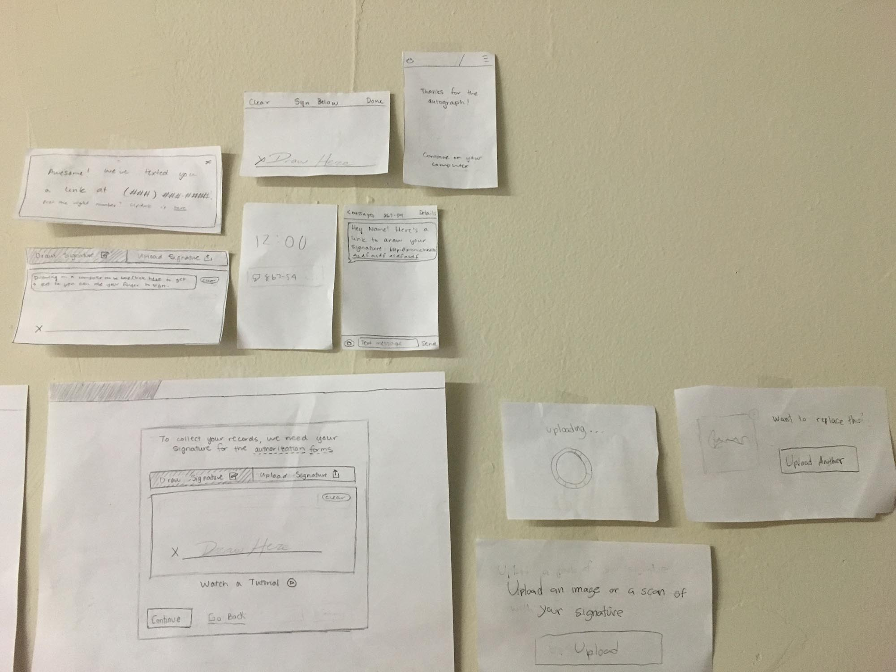
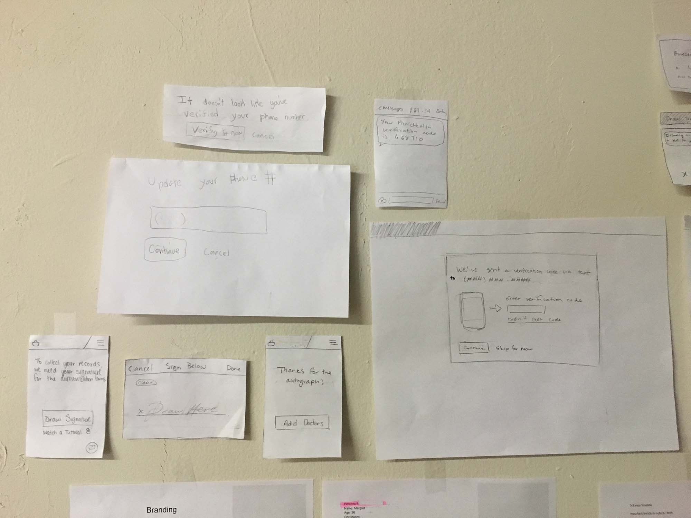

Here is some work I did for a medical records company to help them redesign and rebuild a few key areas of their interface. One of our primary objectives was to make medical records approachable and not convoluted.
The project outlined below tackled simplifying new user on-boarding by removing some of the complexity around getting a patient’s signature.
The first step was to try to understand the problem better by gathering requirements from various stakeholders and documenting the experiences of team members who dealt with patients on a daily basis.
I then asked various members of the team to join a quick brainstorming session and presented the following slides outlining the problem, the current approach, requirements, benchmarking, and brainstorming guidelines:
I believe design is about balancing requirements, carefully considering compromises and working together as a team. Always keeping the user in mind and iterating again and again to make the experience better and better.
As a very small team, we had to stay laser focused.
One of the most challenging aspects was dealing with patients of various levels of computer literacy, while also making sure we got a good clear signature.
The approach we took was to give patients 3 simple ways to sign:
1) The primary option was to sign on a computer with a mouse / trackpad / etc.
2) The second option was to have them upload a scan of their signature.
3) Finally, we also gave them an option to sign on their phone because it is so natural. On the other hand, it is a bit tedious to fill out medical information on a phone so the patient is given the option to return to their computer to finish inputting all their information.
After collecting various ideas from the group brainstorm, iterating a few times, these final ideas were chosen:
 Here is a brief video of a mock usability-test run between me and another member of our team who was interning with us, as we prepare for user testing:
Another video for a different path.


{kind=link}
{kind=link}
{kind=link}
{kind=link}
{kind=link}
{kind=link}
{kind=link}
{kind=link}
{kind=link}
{kind=link}